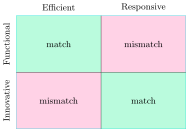

Definition
Products differ:
| Feature | Functional | Innovative |
|---|---|---|
| Cost of a lost sale | low | high |
| Obsolescence risk | low | high |
| Forecast accuracy | high | low |
| Product variety | low | high |
| Life cycle | > 2 years | < 1 year |
| Gross margin | < 35% | > 35% |
Think of a product by life cycle, margin and the four Vs. Example: Apple's suppliers expected iPhone 6s orders cut by 30% in one quarter — innovative products have volatile demand.
Model
| Aspect | Efficient (lean) | Responsive (agile) |
|---|---|---|
| Supply goal | efficiency: meet predictable | respond fast to unpredictable |
| demand at lowest cost | demand; minimize stock-outs, | |
| markdowns, obsolete stock | ||
| Inventory | high turns, minimize stock | significant buffers of parts and |
| finished goods; postponement | ||
| Lead time | reduce if it adds no cost | reduce aggressively |
| Supplier choice | cost | speed, flexibility |
| Product design | integral, max performance at | modular, to enable postponement |
| min cost | ||
| Product \ chain | Efficient | Responsive |
| Functional | match | mismatch |
| Innovative | mismatch | match |
Lean supply chain: JIT; basic contracts with relational elements; sourcing on total cost, not price; local sourcing; fewer suppliers; shortest possible chain; pull. Challenges: JIT needs frequent deliveries — hard with global low-cost suppliers; green issues; more exposure to disruption. Agile supply chain: "responds quickly to sudden changes in demand or supply, handles external disruptions smoothly and cost-efficiently" (Lee 2007); speed = lead time, flexibility = range and response. Paths: supply side (spatial integration, partner capabilities, reliable logistics), operations (cut non-value time, anticipate demand, buffers, contingency plans, flexible production), demand side (information integration, product architecture, postponement, market sensitivity).
Worked example
Pasta (functional: stable demand, low margin) → efficient chain: full trucks, long runs, low stock. A new smartphone (innovative: < 1 year life, high margin) → responsive chain: buffer capacity, fast air freight, modular design. A fashion retailer serving basic T-shirts and trendy items can run both — basics lean, trend items agile — combined via postponement, modularity and platforms.
Pitfall
Responsive is not "inefficient": it spends on speed where lost sales cost more. Functional products in a responsive chain waste money; innovative ones in an efficient chain lose sales and pile up obsolete stock.
Recall
List six product features; fill the efficient vs responsive table; draw the 2×2 match matrix.
Picture

Supply-chain design must follow the nature of demand.